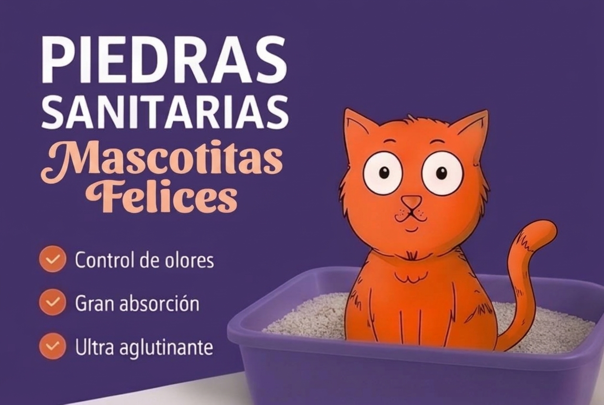
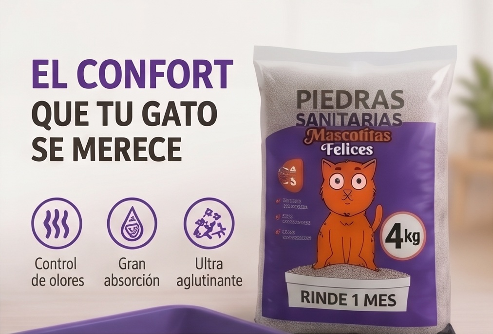
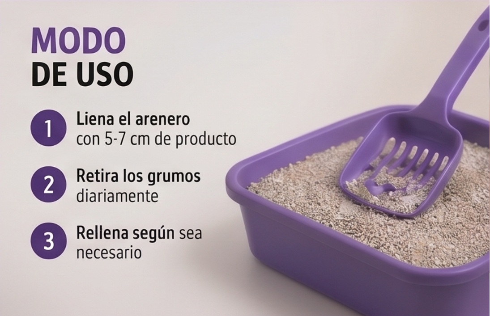

Garantiza un entorno limpio y libre de malos olores. La solución sanitaria eficiente de alto rendimiento para el cuidado diario de tus mascotas.

Nuestra composición aísla y neutraliza la acción del amoníaco de forma prolongada, manteniendo la frescura de los ambientes del hogar sin necesidad de usar fragancias artificiales invasivas.
El mineral genera terrones sólidos y secos al entrar en contacto con líquidos. Esto facilita la remoción precisa de la suciedad, reduciendo el desperdicio del producto y maximizando su duración.

Opciones adaptadas a las necesidades logísticas de tu hogar.

Al interactuar con fluidos, las piedritas forman un coágulo mineral que aísla la suciedad del resto de la bandeja. Solo remueves esa porción compacta, alargando la vida útil del sustrato limpio.
Sí. Coordinamos la logística de entrega de forma directa. Selecciona la presentación deseada y escríbenos para confirmar la disponibilidad y costos de envío según tu área.